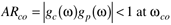
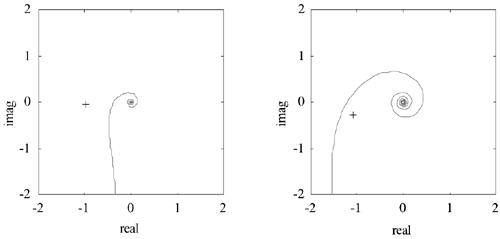
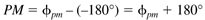
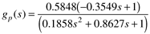
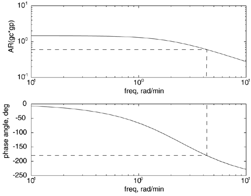
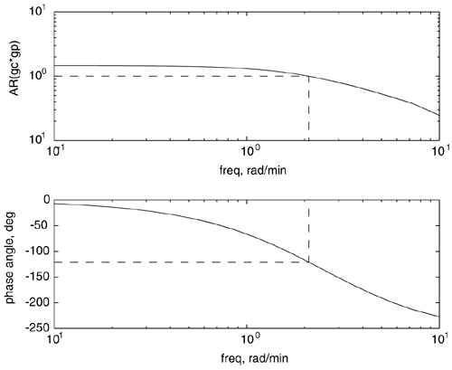
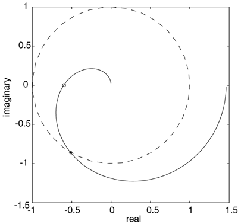

| [ Team LiB ] |
|
7.5 Bode and Nyquist StabilityIn the previous section we used a thought experiment based on the open-loop (controller + process) response to a sinusoidal setpoint input. We found that if the amplitude ratio of the open-loop transfer function [gc(s)gp(s)] is less than 1 when the phase angle is -180°, then the system will be stable when the loop is closed. This requirement is also known as the Bode stability criterion. Notice that we are assuming no valve and measurement effects [or lumping them into gp(s)]. If these effects are included, then gc(s)gp(s)gv(s)gm(s) should be used in the analysis. Bode Stability CriterionAssume that the process is stable [gp(s) has no poles in the RHP] and the controller is stable [gc(s) has no poles in the RHP]. Also assume that the phase angle (f) crosses –180° only once on a Bode plot. The system will be closed-loop stable if and only if the amplitude ratio of gcgp is less than 1 at the crossover frequency.  where wco is known as the crossover frequency, which is defined as the frequency where the phase angle is –180°. The requirements placed by the Bode stability criterion are not that restrictive for most chemical processes. For processes where the phase angle crosses –180° more than once, it is necessary to use the Nyquist stability criterion. Nyquist Stability CriterionA system will be closed-loop stable if a Nyquist plot of gc(s)gp(s) does not encircle the critical point (-1,0). Examples of closed-loop stable and unstable systems are shown in Figure 7-13. Figure 7-13. Illustration of Nyquist stability criterion. (Left) Stable system, critical point is not encircled. (Right) Unstable system, critical point is encircled. The Bode and Nyquist stability criteria indicate whether a closed-loop system will be stable or not, but they do not indicate how "close to instability" a system is. That is, the Bode and Nyquist stability criteria alone do not indicate the robustness of a feedback system to model uncertainty. Gain and phase margins, defined below, will provide an indication of the robustness of a feedback system. Gain MarginLet ARco represent the amplitude of gc(s)gp(s) at the crossover frequency (wco, where f = -180°). The gain margin is defined as
and the Bode stability requirement is that ARco < 1, so for stability The gain margin is the multiplicative factor that the gain can be increased by before the system becomes unstable. Phase MarginLet fpm represent the phase angle when the amplitude of gc(s)gp(s) is 1. This occurs at a frequency wpm. The phase margin is defined as  The closed-loop system will be stable if f > -180° when AR = 1, so the stability requirement is
The phase margin is the amount that the phase angle can decrease (in magnitude, at wpm) before the system becomes unstable. We have developed the Bode and Nyquist stability criteria and defined the gain and phase margins. Next we use an example to illustrate the techniques. Example 7.3: Nonminimum-Phase ProcessConsider the Van de Vusse reactor (Module 5) controlled using a P-only controller.  where time unit is minutes. The Bode plots for gp(s)gc(s) with kc = 2.5 are shown in Figures 7-14 and 7-15. Figure 7-14. Bode plot for Example 7.3. Calculation of the gain margin. Figure 7-15. Bode plot for Example 7.3. Phase margin calculation. We can use the following steps and the Bode plot in Figure 7-14 to calculate the gain margin.
We can use the following steps and the plot in Figure 7-15 to find the phase margin.
The Nyquist plot is shown in Figure 7-16. The unit circle is plotted on this diagram so that it is easy to determine where the amplitude is equal to one. Notice that the Nyquist diagram is consistent with the Bode diagram, since the amplitude ratio is 0.60 when the phase angle is –180°, and the phase angle is –121° when the amplitude ratio is 1.0. Figure 7-16. Nyquist plot for Example 7.3. The unit circle (dashed line) is included for convenience. The points for the gain margin and phase margin calculations are shown as the open circle and star, respectively. |
| [ Team LiB ] |
|